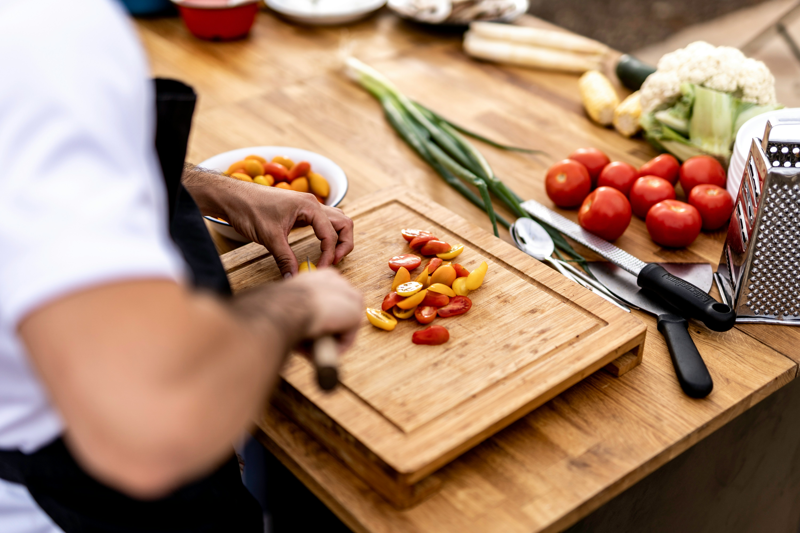
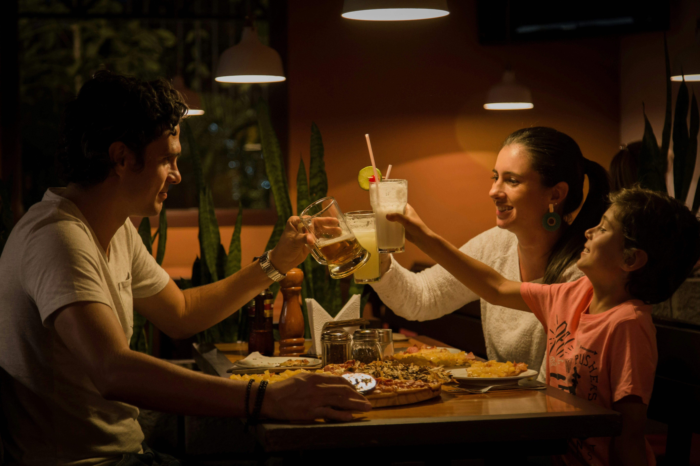
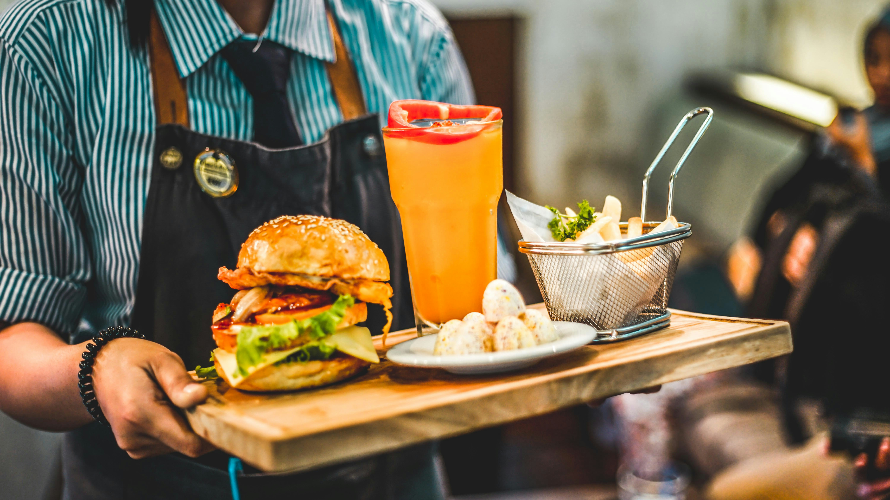

Fresh Ingredients
We source only the finest local ingredients to ensure every dish is as fresh as it is flavorful.
Urban Fork was born from a simple belief — that great food brings people together. Founded in the heart of the city, we started as a small kitchen with big dreams. Today we serve every guest with the same passion, warmth and love that started it all.
We source only the finest local ingredients to ensure every dish is as fresh as it is flavorful.

Every recipe is prepared with care by our dedicated chefs who treat cooking as an art.

Whether you dine alone or with loved ones at Urban Fork you are always family.

From the moment you walk in to the last bite we make sure every experience is unforgettable.